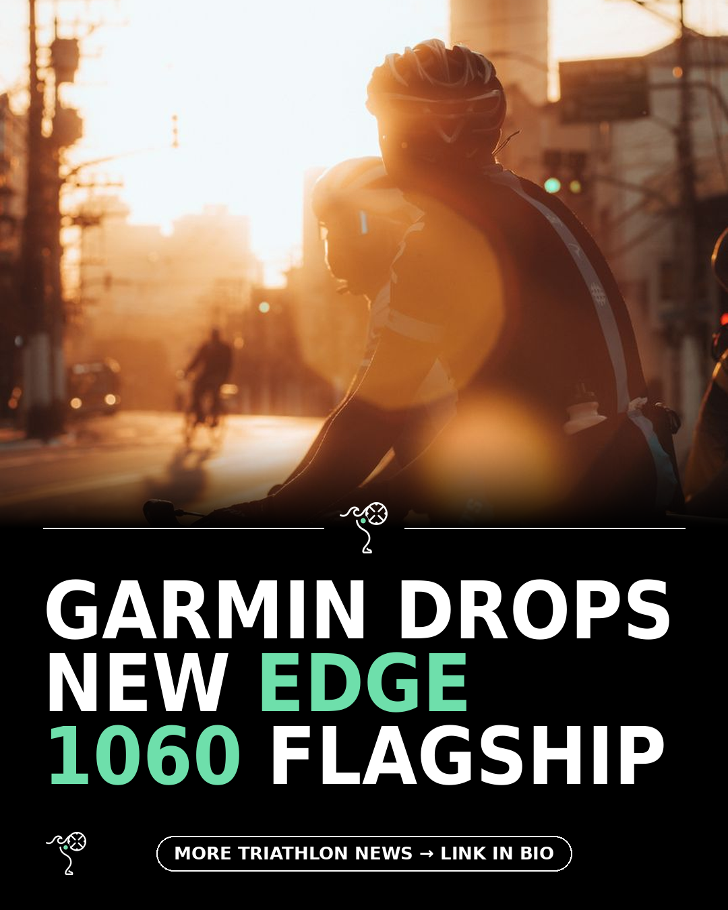

Triathlon News Daily
Wednesday, 21 October 2026 · generated automatically

Today's stories
- Garmin unveils Edge 1060 flagship in rare mid-October dropDC Rainmaker
- Garmin reopens Connect developer API after seven-month freezeDC Rainmaker
- Inside Kat Matthews' Sub8: a masterclass in Ironman pacing220 Triathlon
- Ten weird winter races to save your off-season sanity220 Triathlon
- The off-season playbook: how to come back stronger in spring220 Triathlon
- Stride Soles Review: Custom Insoles That Feel Like a Warm Hug for Your FeetBlog - A Triathlete's Diary